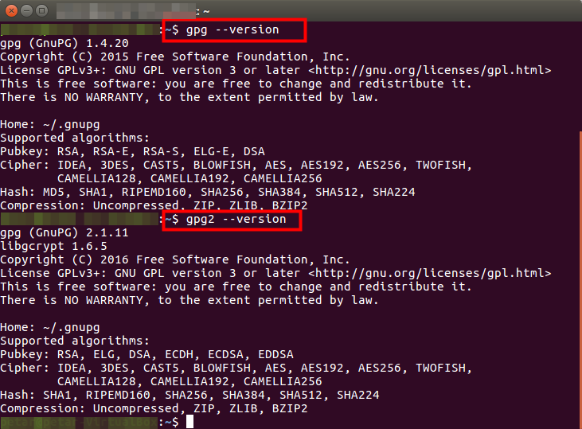
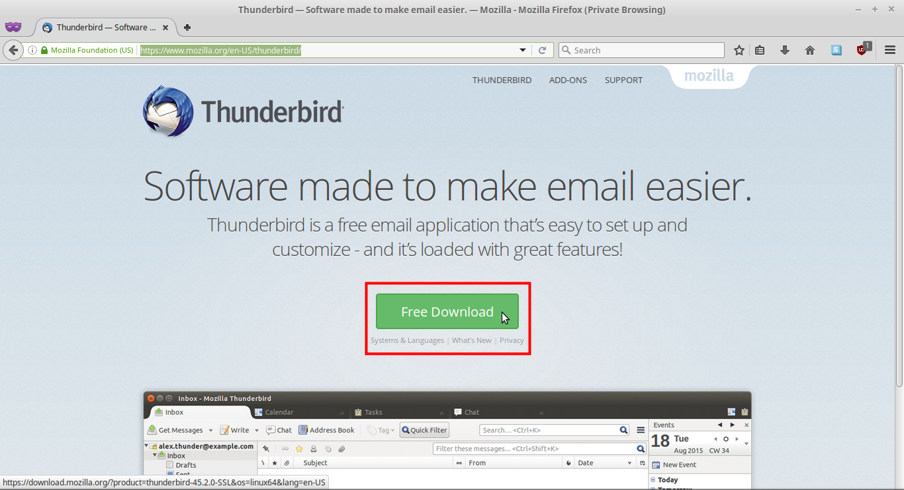
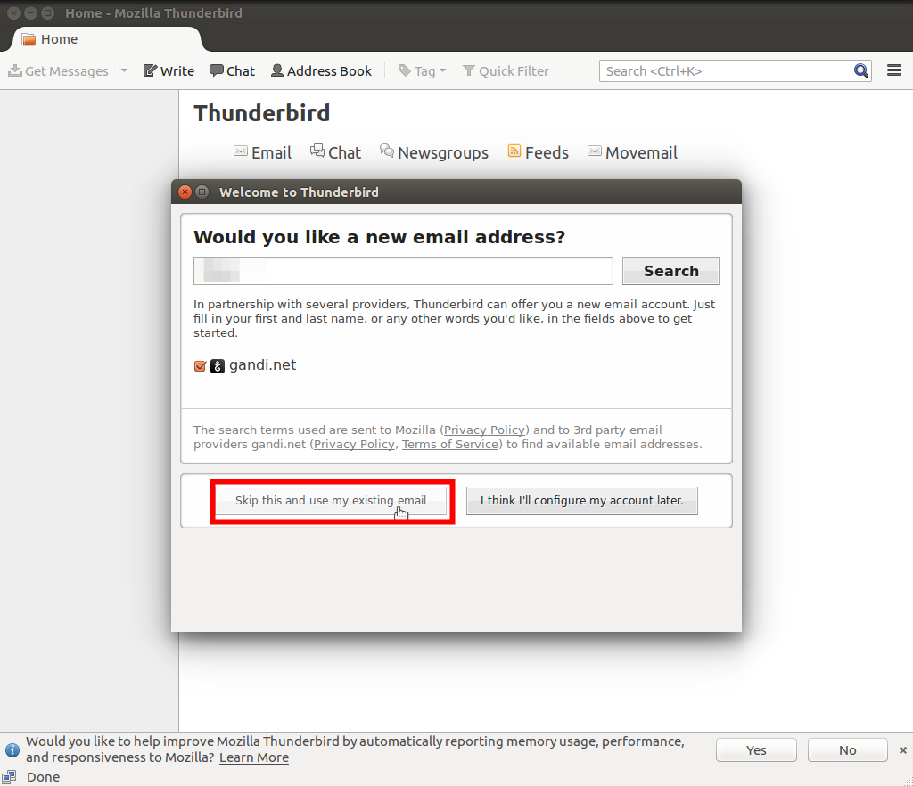
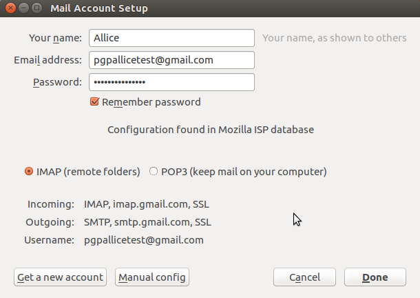
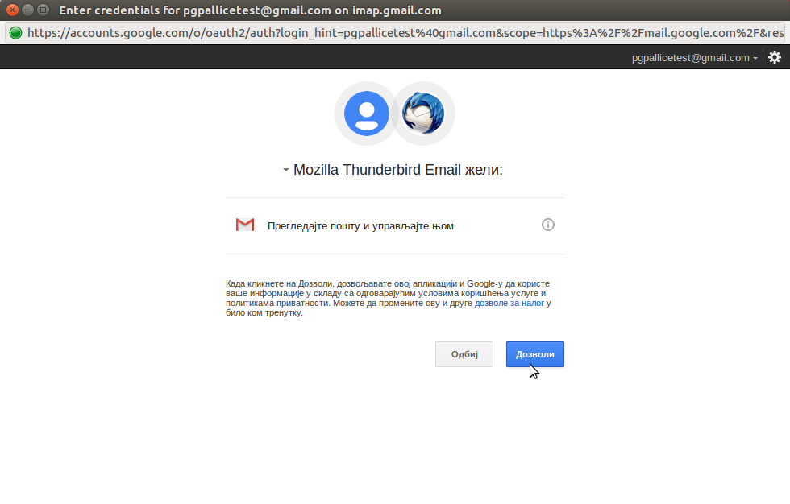
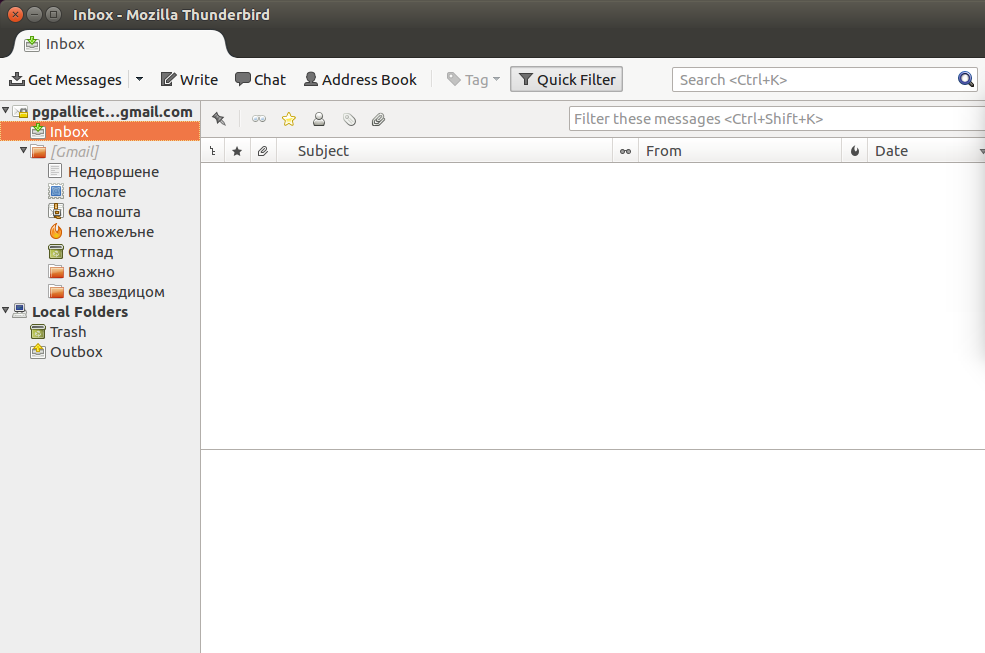
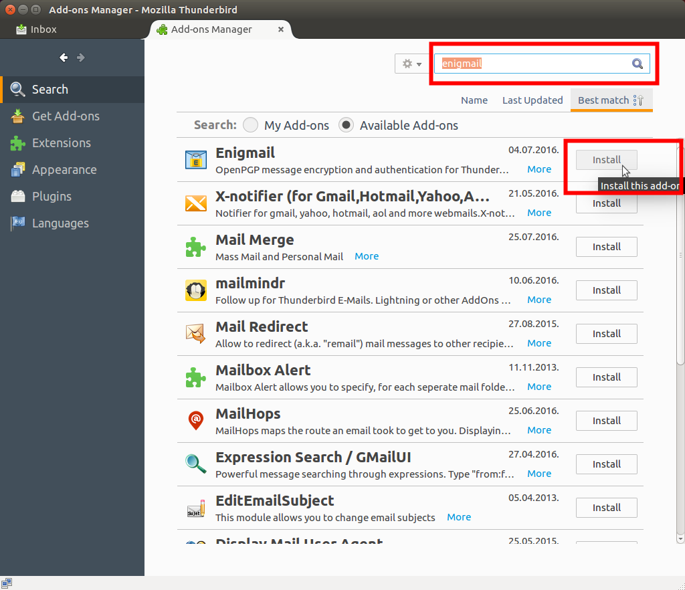
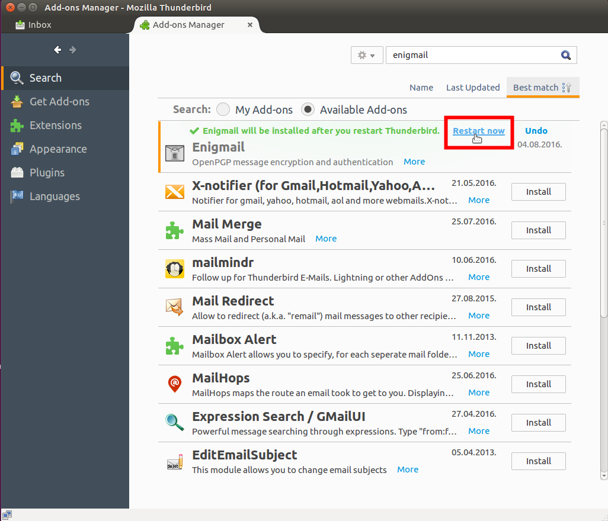
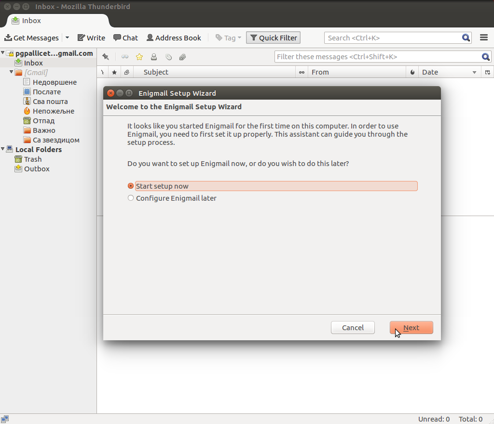

Linuks | Šifrovanje elektronske pošte
Uvod
Kako bi šifrovali vašu elektronsku poštu neophodno je da imate GPG (eng. Gnu Privacy Guard) program koji pruža funkcionalnosti šifrovana, dešifrovanja, digitalnog potpisivanja i provere digitalno potpisanih poruka.
Preduslov za zaštićenu razmenu elektronske pošte je da obe strane koriste GPG.
Tako da kada prođete kroz ovaj tutorijal i namestite svoje GPG ključeve bićete u mogućnosti da razmenjujete šifronu poštu samo sa osobama koje takođe poseduju i koriste GPG, nezavisno od mejl provajdera, mejl protokola i operativnog sistema.
Na većini GNU/Linuks operativnih sistema GPG program je podrazumevano uključen uz softver koji se instalira zajedno sa operatvnim sistemom, tako da instalacija najverovatnije GPG-a nije potrebna.
Treba napomenuti i da je GPG program koji se pokreće iz terminala, ali postoje programi koji pružaju grafički korisnički interfejs (više na sajtu GPG-a). Da bi proverili da li vaš GNU/Linuks ima GPG instaliran samo u terminalu otkucajte:
ili
i prikazaće se verzija GPG-a kao i algoritmi koje podržava.
Figure 1: Verzije 1.4 i 2.1 GPG-a koje su došle instalirane zajedno sa Ubuntu 16.04 operativnim sistemom.
Ukoliko ipak nemate GPG instaliran to možete učiniti komandom:
Pored GPG-a, potrebni su vam i klijent elektronske pošte kao i dodatak mejl klijentu koji za vas barata GPG ključevima tj. olakšava korišćenje GPG-a kroz integrisani grafički korisnički interfejs unutar Thunderbird mejl klijenta
Početnicima preporučujemo Thunderbird kao mejl klijenta jer je jednostavan za korišćenje, čiju instalaciju i podešavanja objašnjavamo u ovom tutorijalu. Thunderbird podržava Enigmail dodatak koji se oslanja na GPG i pruža jednostavan interfejs između mejl klijenta i GPG-a. Alternativni mejl klijenti su: Claws Mail, KMail, Evolution, kao i drugi, za više informacija posetite sajt GPG-a.
2. Instalacija Thunderbird-a
Instaliranje Thunderbird-a možete obaviti na najmanje dva načina: 1. preuzimanjem preograma sa zvaničnog sajta,
Figure 2:Preuzmite Thunderbird za GNU/linuks.
2. ili direktno iz terminala komandom.
za distribucije zasnovane na Debian-u.
3. Podešavanje Thunderbird-a
Figure 3: Prvo pokretanje thunderbird-a. Izaberite opciju korišćenja već postojeće mejl adrese.
Predpostavlja se da već imate mejl adresu koju koristite, i za koju želite da generišete GPG ključeve za zaštitu privatnosti poruka koje razmenjujete.
Posle čega treba da podesite mejl adresu, šifru za pristup toj mej adresi, kao i protokol za razmenu pošte između servera mejl provajdera i vašeg lokalnog mejl kljijenta
Figure 4: Izaberite IMAP ili POP3 u zavisnosti da li želite da čuvate poštu i na vašem računaru.
Figure 5: Zavisno od mejl provajdera, može biti tražena dozvola za korišćenje klijenta za pristup vašem mejl nalogu. Ako ne dobijete ovaj prozor, niste ništa pogrešili.
Što se podešavanja mejl naloga, to bi bilo sve. Sada će vam se mejl klijent sinhronizovati sa mejl serverom i po potrebi preuzeti nove poruke.
Figure 6: Funkcionalan mejl klijent.
4. Instaliranje Enigmail-a
Sada je potrebno da generišemo ključeve za našu mejl adresu.
To možemo uraditi i iz terminala koristeći GPG, ali je za početnike bolje da to urade kroz Thunderbird-ov dodatak Enigmail.

Figure 7: Da bi instalirali Enigmail potrebo je da u Thunderbird-u izaberete opciju za dodatke (eng. Add-ons).
Figure 8: U polju za pretragu dodataka unesite "Enigmail".
Figure 9: Instalirajte najnoviju verziju Enigmail-a i restartujte Thunderbird.
5. Kreiranje ključeva kroz Enigmail
Figure 10: Kada se Enigmail restartuje, automatski će se pokrenuti čarobnjak (eng. Wizard). Ukoliko se sam ne pokrene možete ga i ručno pokrenuti iz Opcije "Enigmail">"Setup Wizard"